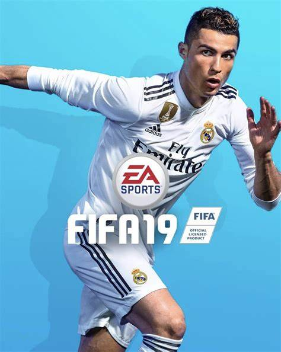

Hobby's
Ik hou er van om veel dingen te doen maar de leukste 2 dingen zijn toch wel Gamen en Voetballen voor mij. Ik begon op mijn achtste met voetballen bij de sportvereniging JVC Cuijk. Ik ben echt een grote voetbalfan geworden toen ik vroeger voetbalvideo's keek van Cristiano Ronaldo. De eerste game-console die ik kreeg was de Playstation3 Het liefst zat ik uren achter mijn Playstation de games Fifa,Call of Duty en Grand Theft Auto te spelen.
